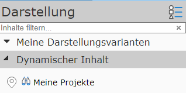

3 Darstellung und Karteninhalte¶
Je nach Karte gibt es unterschiedliche Karteninhalte. So ist beispielsweise eine Karte mit Katasterdaten und eine andere mit Daten aus der Flächenwidmung denkbar. Natürlich könnte eine Karte auch beide Themenbereiche abdecken. Welche Inhalte in einer Karte sind, bestimmt der Kartenautor. Hier werden nur die allgemeinen Konzepte beschrieben, wie die Darstellung von Karteninhalten organisiert werden kann und der Anwender diese beeinflussen kann.
Die Karteninhalte werden im Kartenviewer hauptsächlich im Bereich Darstellung festgelegt (am Desktop in der Regel im linken Frame, auf mobilen Geräten am unteren Bildschirmrand - siehe Übersicht)
Es gibt in der Regel unterschiedliche Arten von Geodaten die auch im Kartenviewer auf unterschiedliche Art und Weise bedient werden können:
3.1 Dynamische Inhalte¶
Dynamische Inhalte sind meist sehr spezifische Daten und nicht in jeder Karte vorhanden. Sie werden in der Liste der Darstellungsinhalte in der Regel ganz oben angezeigt und können extra ein- oder ausgeblendet werden. Die dynamischen Inhalte werden in der Karte als klickbare Marker dargestellt. Es kann von diesen Themen immer nur eines aktuell in der Karte dargestellt werden.

Dynamische Inhalte dienen in der Regel dazu, sehr dynamische Themen (die sich schnell ändern können) in einer Karte bereitzustellen. Da sie in der Karte als Marker dargestellt werden, verhalten sie sich wie die Ergebnisse einer Abfrage/Suche und können somit auch als vordefinierte Abfragen verstanden werden. Abfragen/Suchen werden in einem späteren Abschnitt noch genauer behandelt.
3.2 Hintergrund (Basemaps)¶
Diese Daten sind eher statisch und dienen hauptsächlich der Orientierung in der Karte. Sie liegen in der Regel in der Karte unter allen anderen Daten (Hintergrund). Meist handelt es sich bei diesen Hintergrunddaten um Luftbilder oder Orts- und Straßenkarten. Die Daten sind meistens flächenfüllend, daher kann immer nur ein Hintergrund gleichzeit angezeigt werden.
Im Darstellungsbereich des Kartenviewers erscheinen die Hintergrund Karten etwa folgendermaßen:

Mittels Klick auf eine der Kacheln wird der Hintergrund gewechselt. Der Button Kein Hintergrund setzt alle Hintergrund Karten auf unsichtbar. Gibt es mehr als drei mögliche Hintergrundkarten, kann die Kachelansicht mit dem Pfeilsymbol (Pfeil nach unten unter den Kacheln) erweitert werden.
Die xx% Buttons geben die Transparenz des dargestellten Hintergrundes an.
Bemerkung
Durch die Transparenz erscheint der Hintergrund „heller“, was für mache Anwendungen bei der Überlagerung mit Fachdaten zu einem bessern Kontrast führen kann.
Optionale Hintergrund Karten (sogenannte Overlay-Karten) können - falls vorhanden - über den eigentliche Hintergrund Karte gelegt werden (hier Strassen Farbe). Das macht beispielsweise Sinn, wenn über eine Luftbild Karte zur Orientierung noch Straßen und Straßennamen gelegt werden sollten:

Bemerkung
Da Hintergrund Karten in der Regel statische Daten enthalten, liegen sie als sogenannte Karten-Kacheln vor. Diese Kacheln existieren bereits vorberechnet für alle Maßstäbe auf dem Server, was die Darstellung besonders performant macht und beim Navigieren in der Karte für flüssige Übergänge sorgt.
3.3 Darstellungsvarianten (Fachdaten)¶
Dabei handelt es sich um die für eine Kartenanwendung eigentlich entscheidenden Daten. Im Gegensatz zu den Hintergrund Karten liegen diese Daten in der Regel nicht vorprozessiert für alle Maßstäbe vor, sondern werden für jeden Kartenausschnitt individuell auf Basis der Anforderungen des Anwenders erstellt. Damit gleichen diese Daten eher den Dynamischen Inhalten (siehe oben), mit dem Unterschied, dass hier in der Karte nicht nur klickbare Kartenmarker angezeigt werden. Vielmehr erscheinen diese Daten als kartographisch aufbereitetes Kartenbild, das über die Hintergrundkarten gelegt wird.
Aus dieser Tatsache ergibt sich natürlich, dass diese Daten nicht so flüssig dargestellt werden, wie beispielsweise die vorberechneteten Hintergrundkarten Kacheln. Dafür kann der Anwender bei diesen Daten wesentlich mehr Einfluss auf Inhalt und Darstellung nehmen. So kann der Anwender entscheiden, welche Datenebenen angezeigt werden sollten und welche nicht. Unterschiedlichste Datenebenen können mit Hilfe von Darstellungsvarianten beliebig kombiniert werden.
Bemerkung
Aufgrund der Tatsache, dass die Fachdaten Kartenbilder dynamisch und individuell für jede Anwenderanfrage erzeugt werden, kommt es vor, dass die Darstellung nach Änderen des Kartenausschnittes einige Augenblicke dauern kann. Die Performance dieser Dienste ist abhängig von der Anzahl der dargestellten Daten und der kartographischen Komplexität der Karten. Der Kartenviewer zeigt daher in einer Statusleiste (links unten) eine Fortschrittsanzeige an:

Sind alle Daten geladen, verschwindet die Fortschrittsanzeige und an ihrer Stelle wird der aktuelle Maßstab und der Maßstabsbalken angezeigt:

Tipp: ein Klick auf den Maßstab öffnet einen Dialog, in dem der aktuelle Kartenmaßstab definiert werden kann.
Die Darstellungsvarianten sind im Kartenviewer im Darstellungs-Frame in aufklappbaren Containern organisiert. Welche Darstellungsvarianten verfügbar sind, ist vom Inhalt der Karte und den jeweiligen Berechtigungen abhängig.

In den Containern befinden sich für jede Themengruppe die schaltbaren Darstellungsvarianten. In der Abbildung ist auch ersichtlich, dass diese Darstellungsvarianten auch im Container (Basisdaten) noch einmal in Gruppen unterteilt werden können (Kataster, Verwaltungsdaten). Spätestens nach dem Öffnen dieser Gruppe, erscheinen die klickbaren Darstellungsvarianten:

Die Darstellungsvarianten können mit unterschiedlichen Symbolen angezeigt werden:
Layer-Stapel Symbol: Klickt man auf die Darstellungsvariante, werden die entsprechenden Layer sichtbar geschalten. Ein Klick auf einem Layer-Stapel betrifft in der Regel mehrere Layer. Andere Layer, die für diese Ansicht nicht sinnvoll sind, werden ausgeblendet. Im Beispiel hier wird beispielsweise der Kataster mit grauen Farben ausgeblendet, wenn man auf die Darstellungsvariante mit Kataster in „Magenta“ Farben klickt.
Checkbox Symbol: Über das Häkchen Symbol, lassen sich optionale Darstellungsvarianten ein- oder ausblenden. Auch hinter dieser Darstellungsvariante können sich mehrere Datenebenen befinden, die logisch zu einer Darstellungsvariante gruppiert wurden.
Optionbox Symbol: Über ein Ringerl Symbol können (gleich wie mit dem Häkchen Symbol) Themen optional eingeblendet werden. Der Unterschied ist hier, dass sich diese Themen gegenseitig ausschließen. Es kann nur eine Optionbox innerhalb einer Gruppe aktiv sein.
Bemerkung
Wie die Darstellungsvarianten organisiert sind, und welche Datenebenen Sie einblenden, wird vom Kartenautor definiert. Die Darstellungsvarianten sollten dem Anwender helfen, möglichst einfach ans Ziel zu kommen, ohne genaue Kenntnis über die dahinterliegende Datenstruktur haben zu müssen. Der Anwender möchte beispielsweise nur die Möglichkeit haben, den Kataster einzublenden. Es ist ihm aber egal, ob das die Themen Grundstückgrenzen, Nutzungsgrenzen, Gebäudegrenzen, Nutzungssymbole, Grundstücksnummern, … betrifft.
Bemerkung
Einige Darstellungsvarianten werden in grau aufgelistet. Das bedeutet, dass die Themen Ebenen, die damit eingeblendet werden können, im aktuellen Maßstab nicht sichtbar sind (ein Klick wird in der Karte nicht sofort die gewünschten Themen anzeigen). Zoomt man weiter in die Karte hinein, werden diese Themen irgendwann sichtbar bzw. die Darstellungsvariante erscheint nicht mehr grau.
Der Grund für die maßstabsabhängige Darstellung ist in der Regel, dass nicht alle Themen in jedem Maßstab Sinn ergeben. Grundstücksgrenzen machen etwa in einem sehr kleinen Maßstab (zB komplettes Bundesland) keinen Sinn und würden den Kartenaufbau nur verlangsamen.
3.4 Tipps und Tricks¶
Karten mit sehr vielen Fachendaten, können recht umfangreiche Darstellungsvarianten Bäume haben. Um eine Darstellungsvariante zu finden, sind dabei je nach Übung mehrere Klicks notwendig. Um diesen Vorgang zu beschleunigen, kann nach Darstellungsvarianten im Baum gesucht werden. Dazu gibt es direkt über dem obersten Container (nur Desktop Variante) ein kleines Eingebfeld mit der Beschriftung Inhalte suchen…
Gibt man hier einen Wert ein, verschwinden alle nicht relevanten Darstellungsvarianten und Container und alle relevanten Gruppen werden aufgeklappt dargestellt.

Klickt man auf die gefundene Darstellungsvariante, wird diese aktiv und der Darstellungsvarianten Baum wird wieder in der ursprünglichen Form angezeigt. Man kann ebenfalls auf eine relevante Gruppe klicken, um diese dann im ursprünglichen Baum zu öffen und die darunter liegenden Darstellungsvarianten anzuzeigen.
Möchte man den Darstellungsvarianten Baum einfach wieder in der ursprünglichen Form darstellen, muss der Inhalte aus dem Inhalte suchen Eingabefeld gelöscht werden.